Senior UX Designer · UX Owner
Syngenta · 2022–Present · ~4 years
Cropwise Grower
01 — The product was always moving
The product was always moving
Four years on one product meant the problem kept changing.
Cropwise grew across markets, services and product priorities during the time I worked on it. A requirement could start with a business objective. A market could need something different. A feature could expose another problem once it was live.
The difficult part wasn't producing the interface. It was figuring out what the product should do about the problem — while balancing what growers needed, what the business was trying to achieve, what the technology allowed, and what could scale across markets.
Syngenta
- Engagement
- Loyalty
- Product & service awareness
- Digital relationships
- Growth across AMEA
Grower
- Understand what is happening
- Get useful guidance
- Take the next action
- Get help at the right moment
The question I kept coming back to
What are we actually solving — and what should that mean for the experience?
02 — Turning a brief into a product question
A business objective isn't a design brief.
“Improve engagement” is an outcome the business wants.
It doesn't tell me what a grower should see, do or understand.
So before designing, I tried to translate the objective into a product question.
Business objective
Increase engagement
Product question
What would give a grower a useful reason to return?
Experience question
What can Cropwise help with before, during or after a farming decision?
I kept coming back to four questions
- What is the user trying to do?
- What does the business need to achieve?
- What can the product realistically help with?
- What does this decision change elsewhere in the experience?
Once the product was live, another question became important: what did we learn — and what should change because of it?
That same thinking applied when the request was about products, loyalty, diagnosis or other services. I wasn't trying to create a different design method for every feature.
03 — Decision 01
Home
When everything competes for attention, something has to give.
The Home had grown into a starting point for several parts of the product — crop information, loyalty, services, product discovery and content.
The challenge was not simply rearranging the interface. It was deciding what deserved prominence and what could move deeper into the experience.
What was shaping the decision
- Multiple services were competing for Home attention.
- Grower crop context could make the experience more relevant.
- Loyalty was an important recurring interaction.
- Product and business priorities needed visibility.
- The experience needed to remain understandable as the product continued to grow.
If everything is important, what does the grower actually see first?
Before
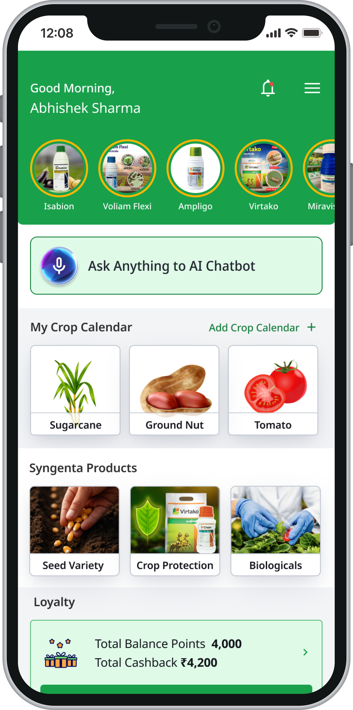
After
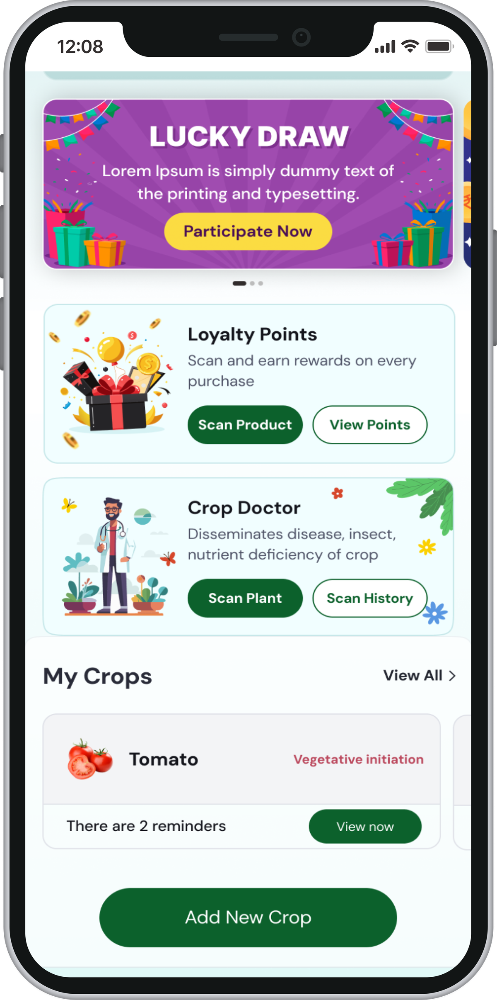
What the change was really about
The redesign was about establishing a clearer hierarchy for the product rather than giving every capability the same weight.
Crop context, products, loyalty and services each had a role, but they did not all need the same level of prominence.
The decision was about what belonged in the primary experience and what could be discovered deeper in the product.
04 — Decision 02
Loyalty
A simple scan became a complex product journey.
The visible action was simple: scan a product and receive a reward.
But the actual experience had to account for what happened around that action:
- Scan
- Eligibility
- Cashback
- Payment
- Success / Failure
- History
How do we make a transaction with many possible states still feel simple to the person using it?
Before
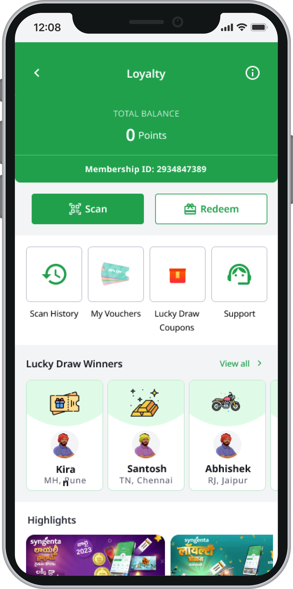
After
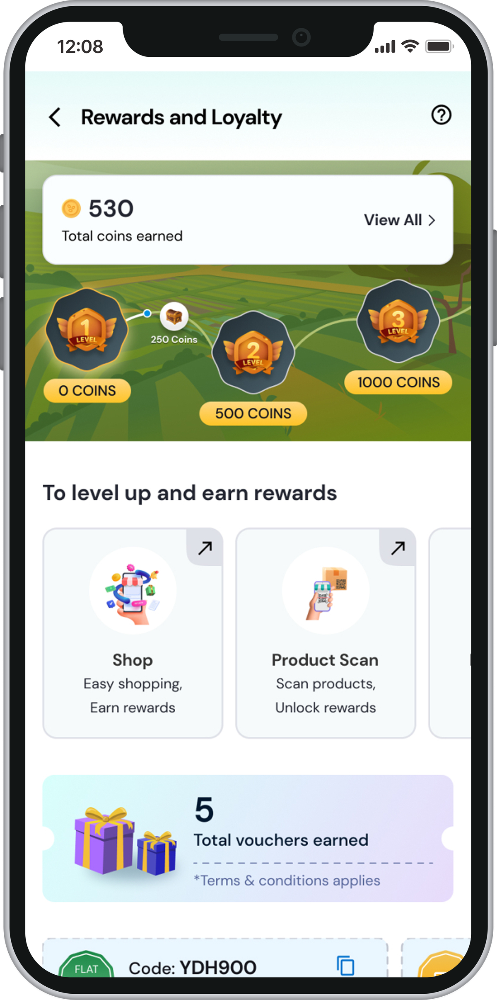
What was shaping the experience
- Product scanning
- Eligibility and limits
- Already-scanned products
- Cashback
- UPI
- Bank-account redemption
- Processing
- Failed transactions
- Transaction history
- Support
Making the transaction understandable
The transaction had more states than the Loyalty landing screen suggested.
I mapped and explored the journey with Product and the relevant teams to make those states visible and discuss what the experience needed to support.
The flow was a shared product artifact, not mine alone.
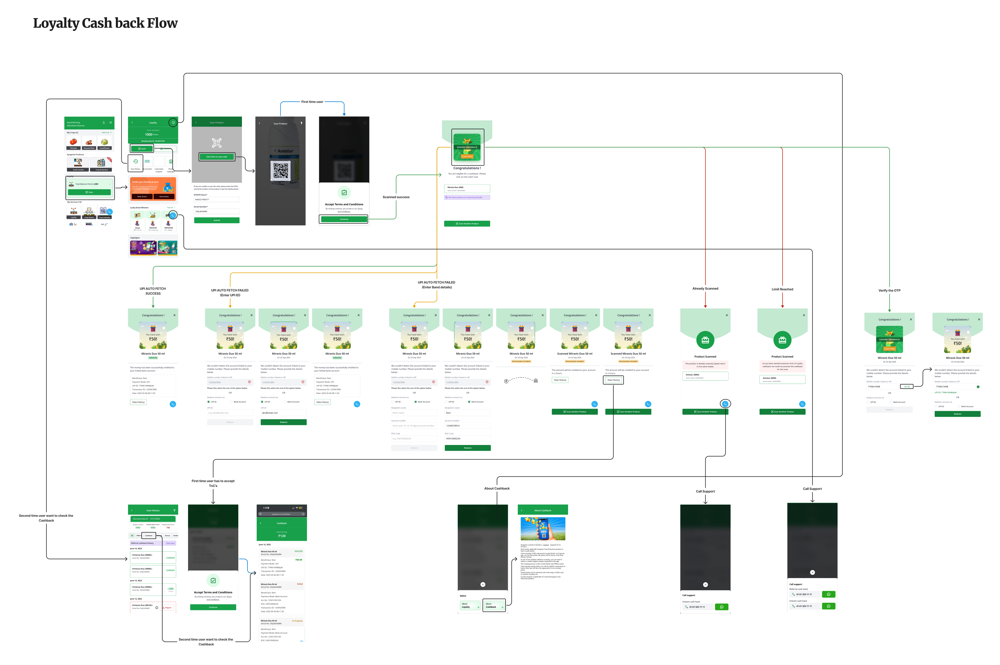
- What I identified
- Loyalty wasn't only a points screen. Scanning, earning, redemption and transaction states all had to connect.
- The question I brought
- How do we make a transaction with many possible states still feel simple to the person using it?
- What needed resolving
- The states where the transaction could not complete normally — including failed cashback, UPI auto-fetch failure, processing, already-scanned products and alternative redemption paths.
- How it informed the experience
- The work moved beyond the Loyalty landing screen. Each state had to make the next action clear, including the states that did not end in success.
05 — Designing across AMEA
One product. Different realities.
Cropwise operates across markets with different crops, practices, business priorities and levels of digital familiarity. The challenge wasn't a different experience for every market. It was finding the boundary between what should remain consistent and what needed to adapt.
Keep consistent
- Structure
- Interaction patterns
- Core behaviours
- Navigation principles
Allow to adapt
- Content
- Service emphasis
- Market priorities
- Local requirements
I worked through those decisions with Product and Regional teams. I didn't own market strategy. My contribution was helping translate those differences into an experience that could still feel like one product.
06 — Field reality
Designed for the conditions, not the desk.
Practical constraints — connectivity, older devices, outdoor use and different levels of digital familiarity — shaped how we thought about speed, steps, hierarchy and interaction.
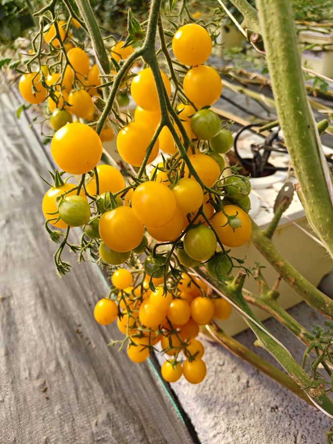
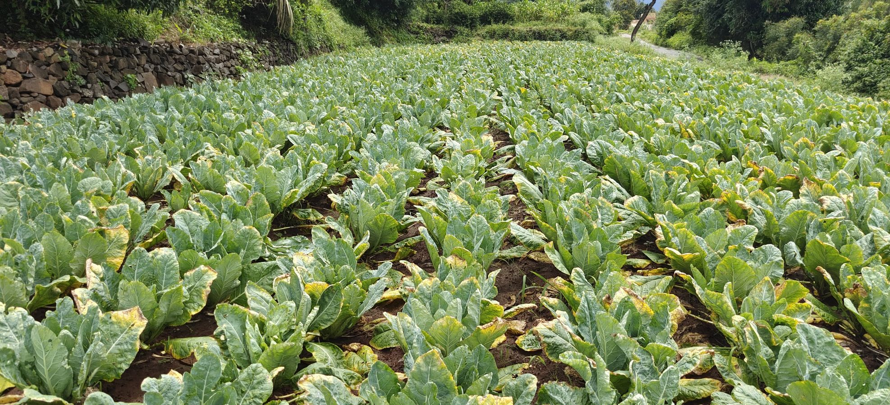
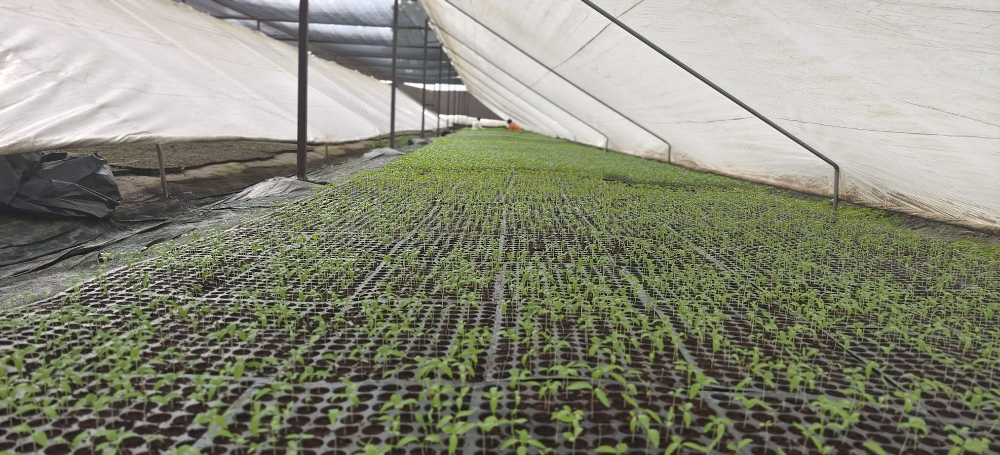
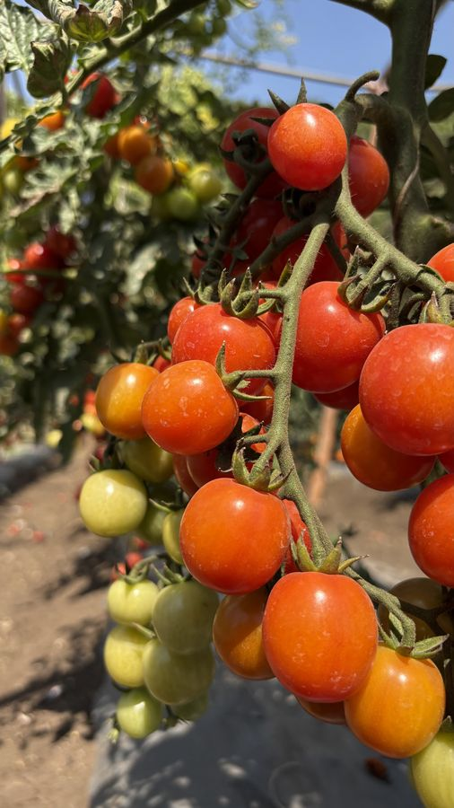
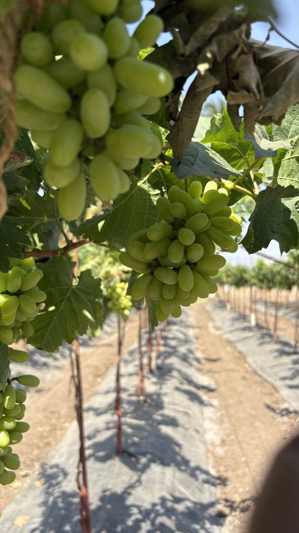
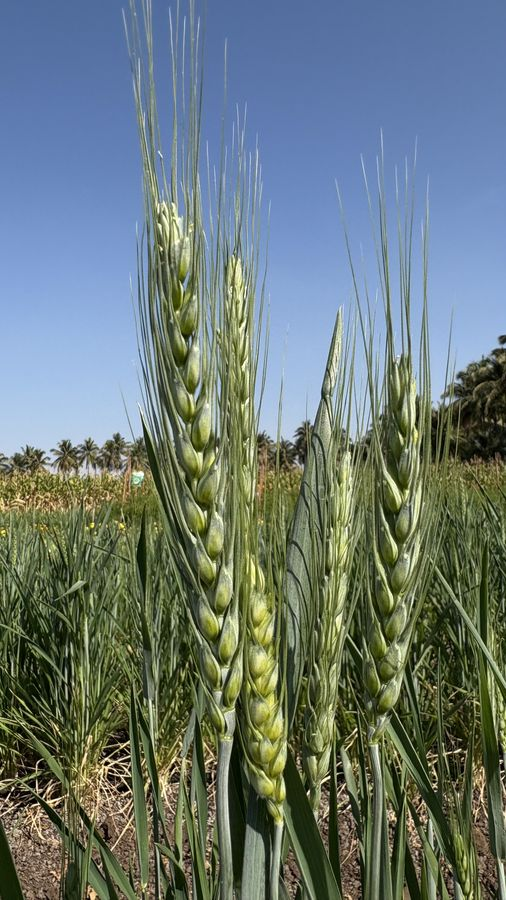
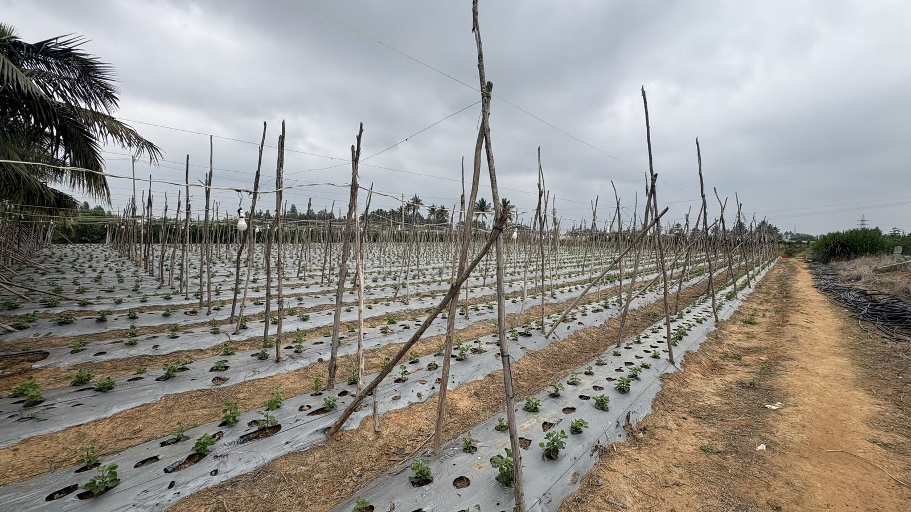
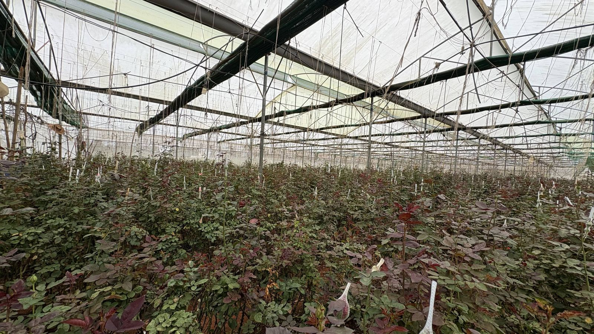
Scroll or drag to move through the visits
- 01Connectivity
A reliable connection couldn't always be assumed.
- 02Device
The experience couldn't assume the newest hardware.
- 03Context
The product could be used outdoors and during an active task.
07 — After launch
Shipping was the middle.
Once something was live, the product became another source of information. Usage data. Feedback from regional teams. Business observations. Field observations. Usually not a perfect answer — more often, a signal that raised another question.
I wasn't the owner of analytics or the business decision. My role was connecting those signals back to the experience. Sometimes the answer was yes. Sometimes the better decision was not to add another feature.
What does this tell us about what someone is trying to do, and is a design change actually warranted?
08 — When product usage becomes a signal
Cropwise could reveal patterns beyond individual interactions.
A Crop Doctor interaction can indicate a crop problem. Considered in aggregate, these can become an agricultural signal — what may be appearing, roughly where and when.
- 01Crop Doctor interaction
- 02Aggregated signal
- 03Pattern
- 04Product / Agronomy / Business discussion
- 05Possible product response
That creates another product question
If we're seeing a pattern, does the product owe the grower a response?
That can lead Product, Agronomy and Business teams to consider timely information, a field activity or relevant support. The UX contribution is not owning the data or deciding the business response.
It is asking
- What does the signal mean for the experience?
- Would responding actually help the grower?
- What is the smallest useful product response?
09 — What the work enabled
For growers
- More relevant information
- Guidance and services can be connected to crop context and the situation at hand.
- Easier access to support
- Important services are available within one digital experience.
- Support across the crop journey
- From crop planning and diagnosis to protection, loyalty and finding a retailer.
For Syngenta
- Digital engagement
- More reasons for growers to return to the product.
- Product & service discovery
- Relevant products and services can be introduced in the context of grower needs.
- Scalable product experience
- A foundation that can adapt across different markets.
Evidence note These outcomes are presented from the product and project context available to me. I am not attaching causal performance numbers where a reliable before/after measurement wasn't available.
10 — Reflection
Four years on one product changed how I work.
I used to think more about the screen in front of me.
Working on Cropwise made the larger questions harder to ignore:
- Why are we building this?
- What does the grower actually need?
- What constraints will shape the experience?
- What happens when this needs to work in another market?
- What can we learn once it is live?
Today, I see the interface as one part of the product decision.
The screen was never the hard part.
Figuring out what it was for, what constraints mattered, and what to do after it shipped was the bigger job.